Lesson content · 课文
Lesson 22: Give me/him/her/us/them a ... Which one? · 给我／他／她／我们／他们一个……
Listen and answer the questions. 听录音并回答问题。
Which one? 哪一个？
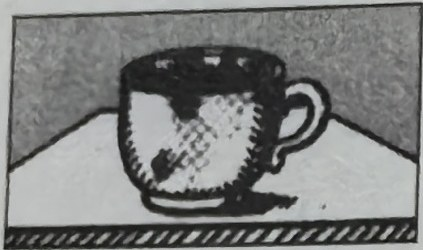
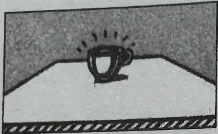
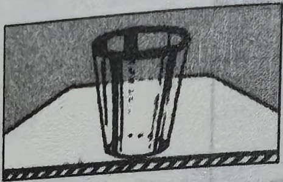
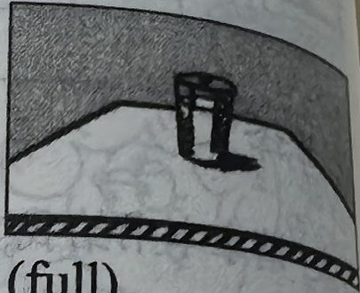
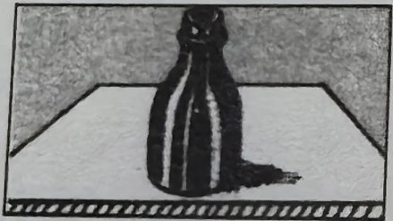
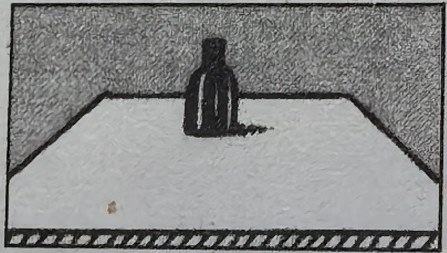
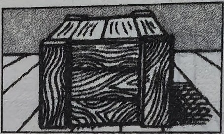
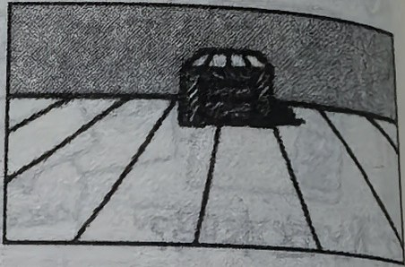
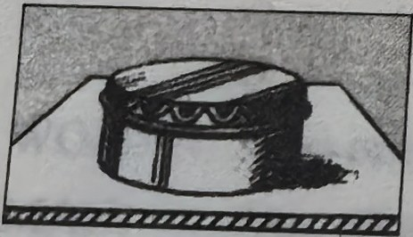
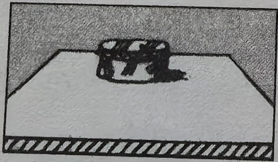
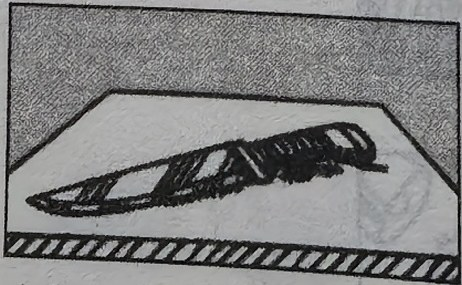
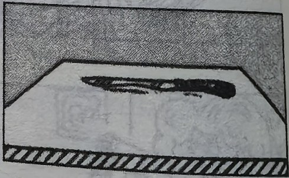
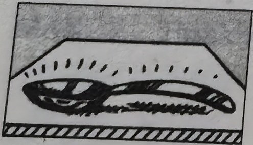
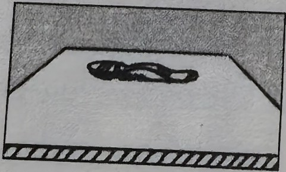
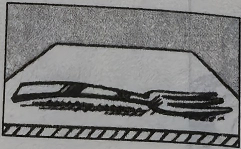
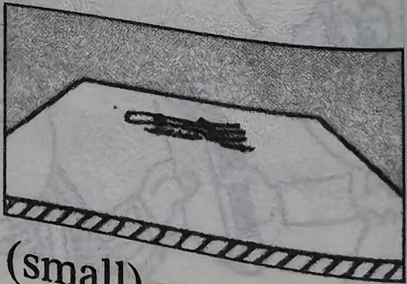
New words and expressions · 生词和短语
| Word · 单词 | Pronunciation · 音标 | Meaning · 词义 |
|---|---|---|
| empty | /ˈempti/ | adj. 空的 |
| full | /fʊl/ | adj. 满的 |
| large | /lɑːdʒ/ | adj. 大的 |
| little | /ˈlɪtl/ | adj. 小的 |
| sharp | /ʃɑːp/ | adj. 尖的，锋利的 |
| small | /smɔːl/ | adj. 小的 |
| big | /bɪɡ/ | adj. 大的 |
| blunt | /blʌnt/ | adj. 钝的 |
| box | /bɒks/ | n. 盒子，箱子 |
| glass | /ɡlɑːs/ | n. 杯子 |
| cup | /kʌp/ | n. 茶杯 |
| bottle | /ˈbɒtl/ | n. 瓶子 |
| tin | /tɪn/ | n. 罐头 |
| knife | /naɪf/ | n. 刀子 |
| fork | /fɔːk/ | n. 叉子 |
| spoon | /spuːn/ | n. 勺子 |
Practice · 课文练习
Written exercises · 书面练习
A. His, Her, Our or Their
Complete these sentences using His, Her, Our or Their. 完成以下句子，用 His、Her、Our 或 Their 填空。
Example · 例句
Is this Tim’s shirt? No, it’s not. His shirt is white.
-
textbook: A. His, Her, Our or Their — Is this Nicola’s coat? No, it’s not. ____ coat is grey.
-
textbook: A. His, Her, Our or Their — Are these your pens? No, they’re not. ____ pens are blue.
-
textbook: A. His, Her, Our or Their — Is this Mr. Jackson’s hat? No, it’s not. ____ hat is black.
-
textbook: A. His, Her, Our or Their — Are these the children’s books? No, they’re not. ____ books are red.
-
textbook: A. His, Her, Our or Their — Is this Helen’s dog? No, it’s not. ____ dog is brown and white.
-
textbook: A. His, Her, Our or Their — Is this your father’s tie? No, it’s not. ____ tie is orange.
B. Questions and answers · 对话练习
Write questions and answers. 模仿例句写出相应的对话。
Example · 例句
book / (this blue) / that red
Give me a book please.
Which one? This blue one?
No, not this blue one. That red one.
Here you are.
Thank you.
-
textbook: B. Questions and answers · 对话练习 — cup / (this dirty) / that clean
-
textbook: B. Questions and answers · 对话练习 — glass / (this empty) / that full
-
textbook: B. Questions and answers · 对话练习 — bottle / (this large) / that small
-
textbook: B. Questions and answers · 对话练习 — box / (this big) / that little
-
textbook: B. Questions and answers · 对话练习 — tin / (this new) / that old
-
textbook: B. Questions and answers · 对话练习 — knife / (this sharp) / that blunt
-
textbook: B. Questions and answers · 对话练习 — spoon / (this new) / that old
-
textbook: B. Questions and answers · 对话练习 — fork / (this large) / that small
Practice worksheet · 配套练习
A. Vocabulary
Complete with give, sit, meet, come, see or catch. 完成以下练习。
Example · 例句
Here’s your shirt, Tim. Catch!
-
worksheet: A. Vocabulary — ____ him a clean knife, please.
-
worksheet: A. Vocabulary — Here you are, children. ____ down here.
-
worksheet: A. Vocabulary — ____ and ____ my father’s new car!
-
worksheet: A. Vocabulary — Nice to ____ you.
B. Structure
Write a two-line conversation. 模仿例句完成以下练习。
Example · 例句
A: There are two books here. Which one?
B: Give me the English one, please.
-
worksheet: B. Structure — three handbags / us / blue
-
worksheet: B. Structure — six ties / them / smart
-
worksheet: B. Structure — two cups / him / clean
-
worksheet: B. Structure — two passports / her / new
Original images · 原图对照
Expand a page to compare it with the transcription. Open the original in a new tab to zoom in.
展开原图核对文字，也可以在新标签页打开原图放大查看。
Lesson text and oral practice · 课文与口头练习
Open original · 打开原图 ↗ Download original · 下载原图

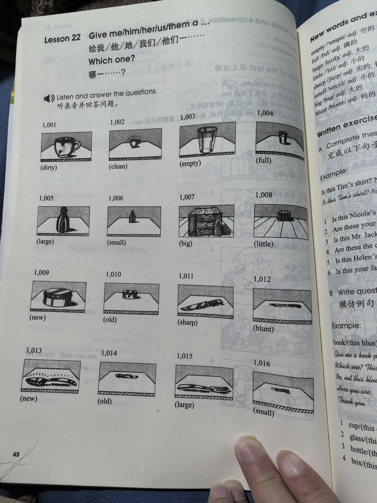
Vocabulary, notes and written exercises · 生词、注释与书面练习
Open original · 打开原图 ↗ Download original · 下载原图

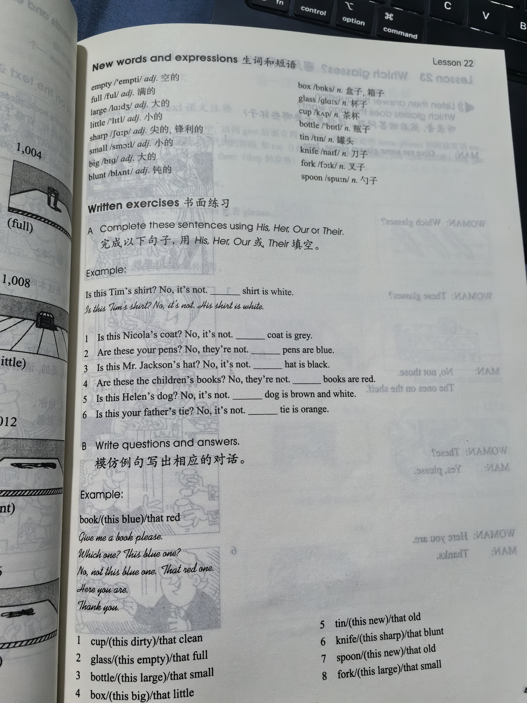

Grammar practice · 语法练习
I. Make imperative sentences according to the example
Example: I want a ticket. -> Give me a ticket, please.
- I want a coffee.
- He wants a coffee, too.
- She wants this book.
- We want two pencils.
- Tony wants his book.
- Those tourists want two train tickets.
- My daughter wants an ice cream.
- They want their passports.
- We want a pen.
- I want an egg.
- Helen wants an umbrella.
II. Complete the dialogues, using the cues given according to the example. Make changes where necessary
Example: dog/brown -> Look at those dogs! Which is your dog? This one? No, not that one. My dog is the brown one.
umbrella/greenhat/black and greyknife/smallglass/emptycase/redcar/dirtywatch/blue
Your notes and answers
Use this space for longer responses or exercises that do not have an individual answer box.